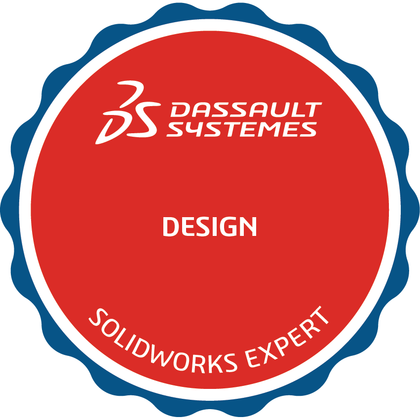
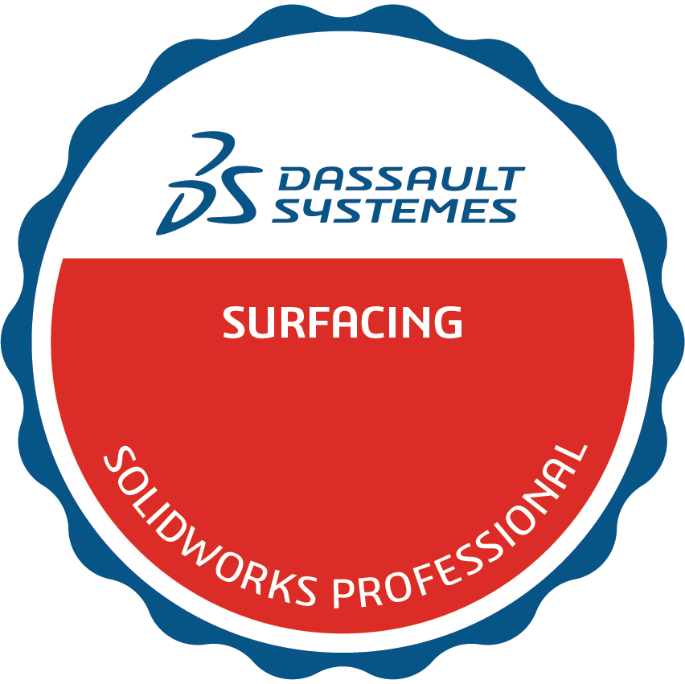
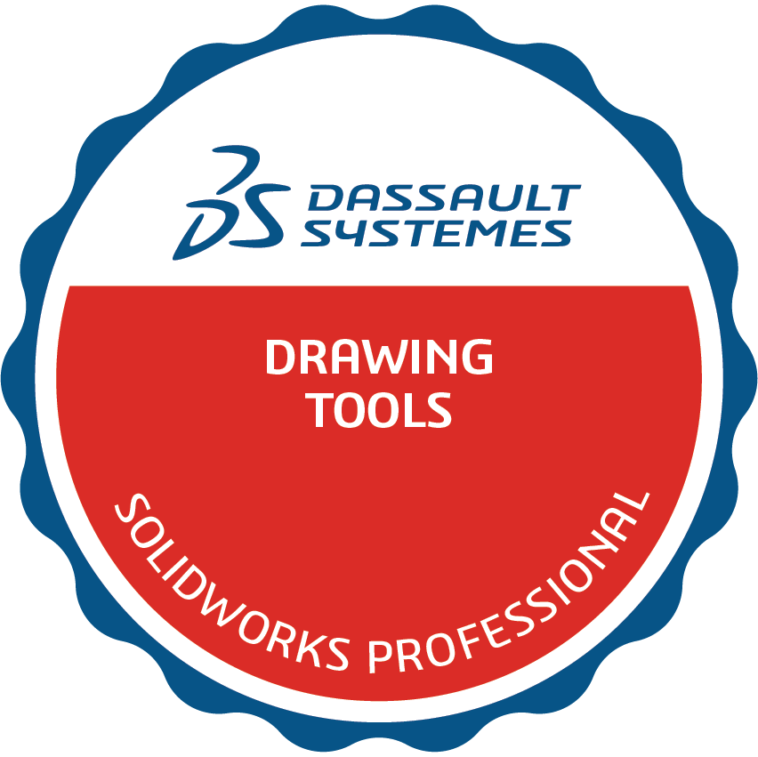
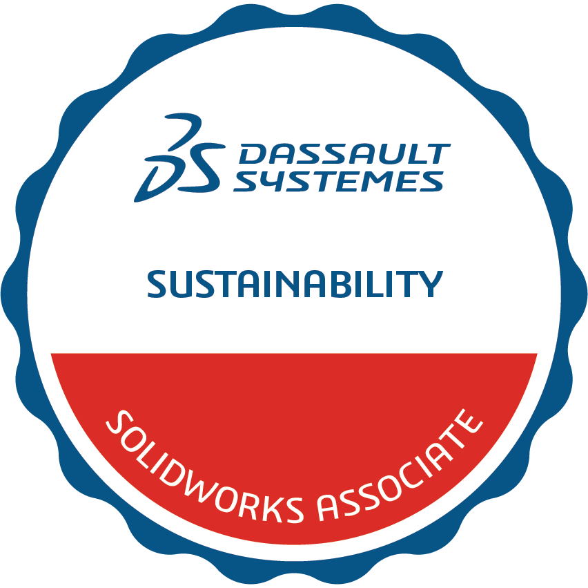
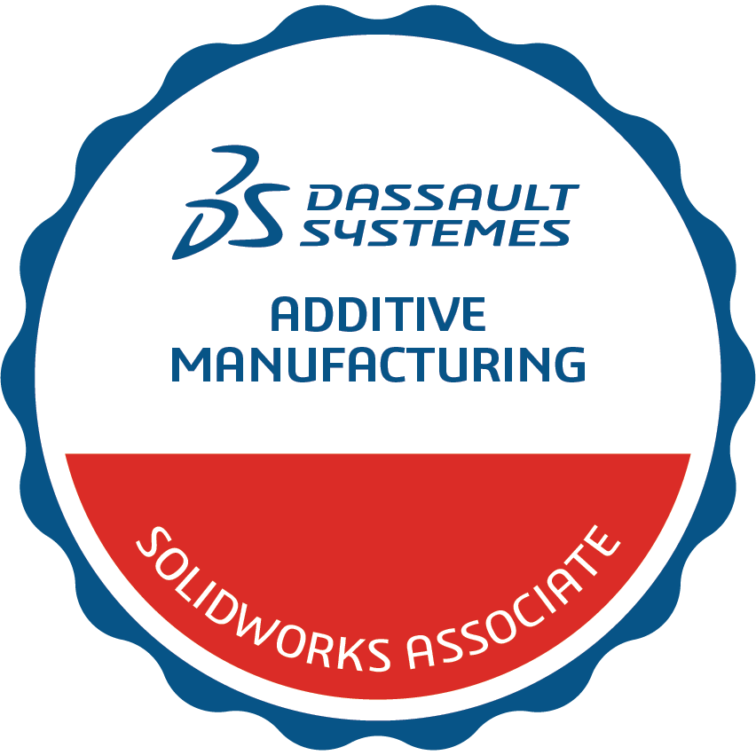

Certifications

Certified SOLIDWORKS Expert
The highest tier in the SOLIDWORKS certification program. Achieving the CSWE validates complete mastery across all areas of SOLIDWORKS — modeling, assemblies, drawings, surfacing, weldments, sheet metal, and drawing tools. Fewer than 1% of SOLIDWORKS users hold this credential.

Advanced ProfessionalSOLIDWORKS Surfacing Professional
Advanced proficiency in complex surface modeling. Highly skilled in surface creation, manipulation, and repair for precise organic and industrial design work.

Advanced ProfessionalSOLIDWORKS Drawing Tools Professional
Advanced proficiency in SOLIDWORKS drawing and detailing tools. Skilled in producing precise technical drawings, annotations, and manufacturing documentation.
 Advanced Professional
Advanced Professional
SOLIDWORKS Weldments Professional
High proficiency in SOLIDWORKS weldments tools. Experienced in building custom structural frames, managing weld gap distancing, and generating accurate cut lists for fabrication.
 Advanced Professional
Advanced Professional
SOLIDWORKS Sheet Metal Professional
Advanced proficiency in SOLIDWORKS sheet metal design. Skilled in creating sheet metal parts, forming tools, flat patterns, and bend allowance calculations for manufacturing.
 Professional
Professional
SOLIDWORKS Design Professional
Advanced proficiency in 3D modeling, complex part design, parametric assemblies, and design validation. Skilled in creating fully defined models and optimizing mechanical components for performance and manufacturability.

AssociateSOLIDWORKS Sustainability Associate
Proficiency in assessing environmental impacts of designs using SOLIDWORKS Sustainability tools. Skilled in lifecycle assessment, material selection, and optimizing designs for energy efficiency.

AssociateSOLIDWORKS Additive Manufacturing Associate
Proficiency in additive manufacturing principles and SOLIDWORKS tools for 3D print preparation. Knowledgeable in print orientation, support structures, material considerations, and design-for-AM best practices.
 Associate
Associate
SOLIDWORKS Design Associate
Foundational proficiency in 3D part modeling, assembly creation, and technical drawings using SOLIDWORKS. The starting point of a certification path that culminated in the Expert credential.